കണ്ട കൂടുകളെക്കുറിച്ച് പറയാമോോ?
47
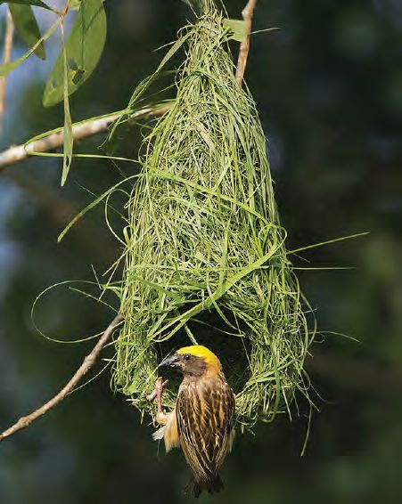
കണ്ട കൂടുകളെക്കുറിച്ച് പറയാമോോ?
47
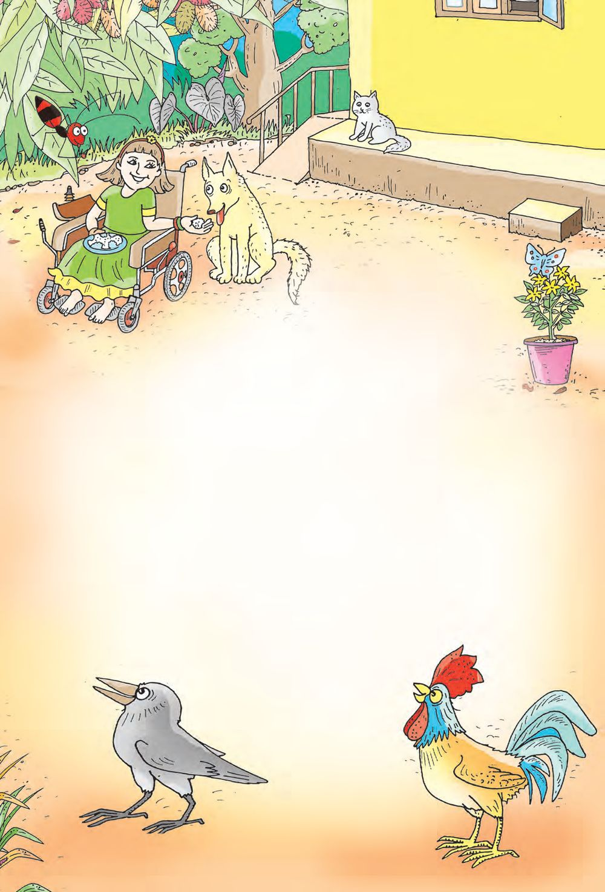
6 പിന്നേം പിന്നേം ചെറുതായി പാലപ്പം ഷൈനീ...... ഷൈനീ..... ആരാ? ഞാനാ. എന്താ? വിശക്കുന്നു. തിന്നാൻ ഇത്തിരി അവലോോ മലരോോ അരിയോോ പൊൊരിയോോ അടയോോ വടയോോ തരുമോോ ഷൈനീ?
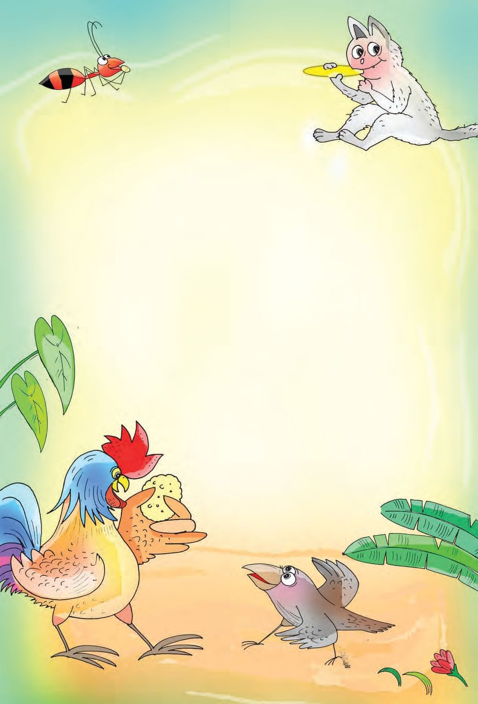
വെളുവെളുത്തതൊരു പാലപ്പം എങ്ങനെയെങ്ങനെ ചെറുതായി? കോോഴി വന്ന് കൊൊത്തീട്ടോോ? പൂച്ച വന്ന് തിന്നിട്ടോോ? പതുപതുത്തതൊരു പാലപ്പം എങ്ങനെയെങ്ങനെ ചെറുതായി? ......................................................................... ......................................................................... ......................................................................... .................................................ചെറുതായി?
49
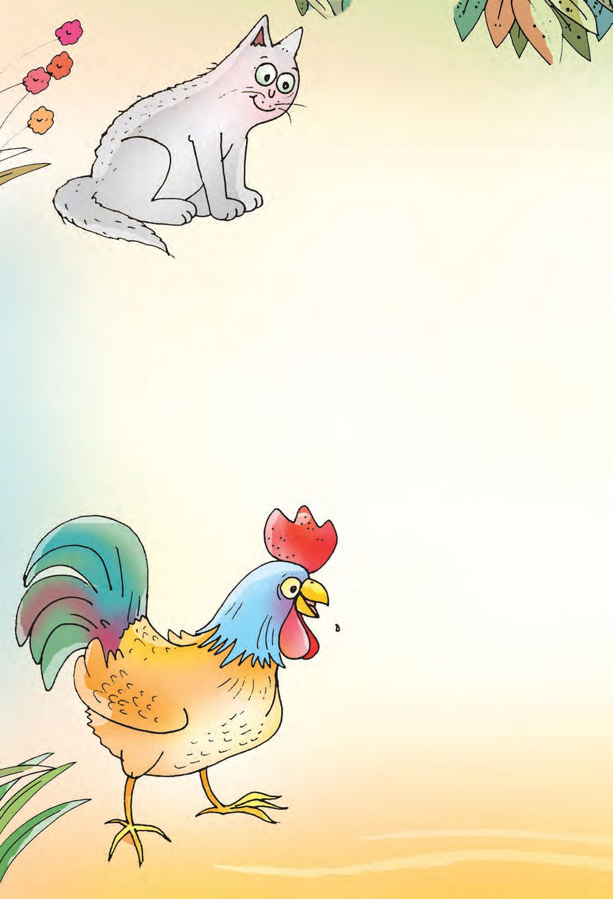
പാൽനിറമൊൊള്ളളൊരു പാലപ്പം പാൽരുചിയുള്ളളൊരു പാലപ്പം ............................................................... ............................................................... ............................................................... ...............................................................
രുചിമേളം
50
മധുരമുള്ളവ ............................................ .......................................... പുളിയുള്ളവ ............................................ ........................................... കയ്പുള്ളവ ............................................ ..........................................
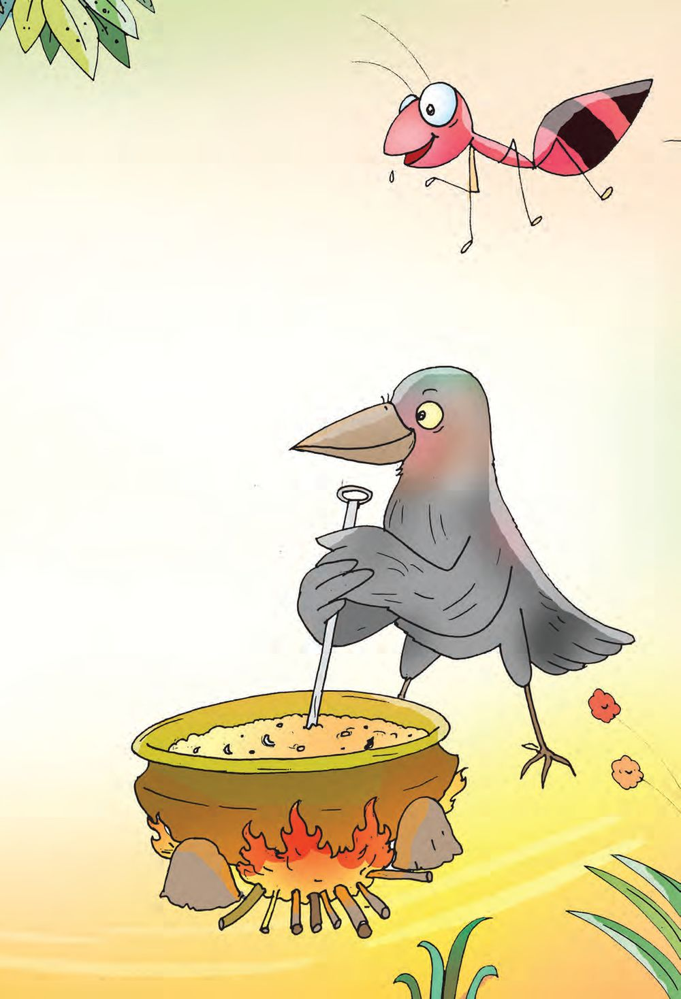
ചിത്രം നോോക്കൂ കാക്ക പ്രഥമൻ ഉണ്ടാക്കിയ കഥ പറയൂ, എഴുതൂ. ............................................................................. ............................................................................. ............................................................................. ............................................................................. .................................................................. ............................................... ............................................... ............................................... ...............................................
51
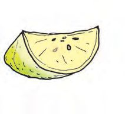
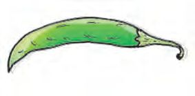
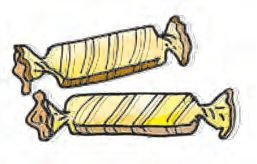
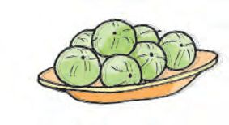
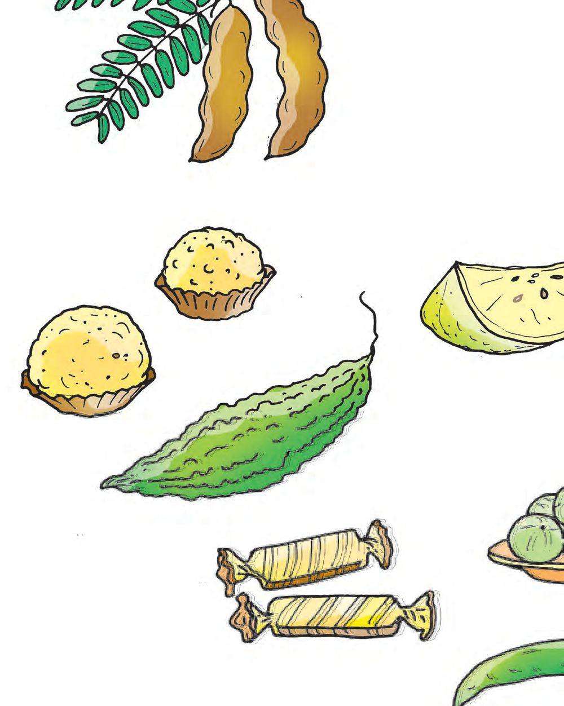
പോോഷകമാണീ പാവയ്ക്ക അച്ഛാ ............................പാവയ്ക്ക പിച്ചാം മോോനെ ......................... കയ്പാണച്ഛാ പാവയ്ക്ക പോോഷകമാണേ ........................ വയ്കക്കകാം .......................... പാവയ്ക്ക ........................................ പാവയ്ക്ക തിന്നാം ........................ പാവയ്ക്ക
ആഹാര വിശേഷങ്ങൾ ആഹാരങ്ങൾ പലതുണ്ട് ആവിയിൽ വേവും ആഹാരങ്ങൾ
52
കണ്ടെത്താം ഇലയട, പുട്ട്, കൊൊഴുക്കട്ട, കുമ്പിളപ്പം, നൂലപ്പം, .....................
ചുട്ടെടുക്കും ആഹാരങ്ങൾ
ഓട്ടട, പത്തിരി, ദോോശ .............................
വറുത്തെടുക്കും ആഹാരങ്ങൾ
ഉണ്ണിയപ്പം, അച്ചപ്പം, ബോോണ്ട,....................
വേവിക്കാത്തവ പലതുണ്ട്
മോോര്, തൈര്, സർബത്ത്, .....................................
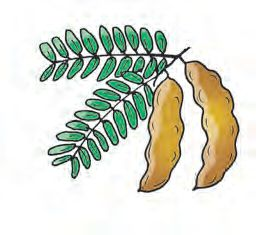
പദകേളി സദ്യയിലെ ഇനങ്ങൾ കണ്ടെത്തി എഴുതൂ
ഴം ച്ച
പാ
സം
റ്
ഓ
പ്ര
ൻ
സദ്യയയിൽ എന്തൊൊക്കെ? പഴം, പപ്പടം, ഉപ്പേരി, പച്ചടി, കിച്ചടി, അച്ചാർ ഓലൻ, കാളൻ, സാമ്പാർ പരിപ്പ്, രസം, മോോര് ചോോറ്, നെയ്യ്, നാരങ്ങ പ്രഥമൻ, ബോോളി, സേമിയ ........................................................ .......................................................
53
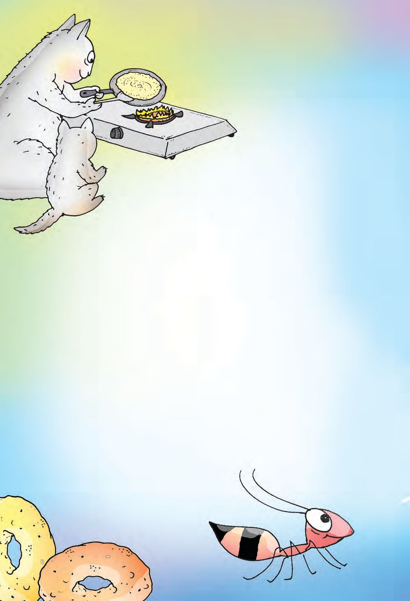
വായിക്കാം നടിക്കാം ദോോശമാവ് കലക്കി പാകത്തിന് ഉപ്പ് ചേർത്തു അടുപ്പിൽ തീ കത്തിച്ചു ദോോശക്കല്ല് ചൂടാക്കി കല്ലിൽ എണ്ണ പുരട്ടി മാവ് ഒഴിച്ച് പരത്തി ദോോശ മറിച്ചിട്ടു പാത്രത്തിലെടുത്തു കൈ കഴുകി വന്നു വയർ നിറയെ തിന്നു.
54
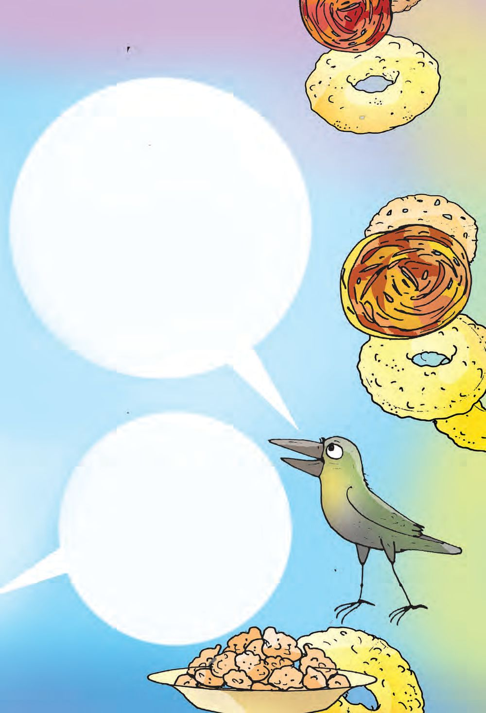
വട വേണോോ വട ! ഉള്ളിവടയോോ .................................. മസാലവടയോോ ഏതു വടയാ കഴിക്കേണ്ടേ ?
പരിപ്പുവടയോോ .................................. മസാലവടയോോ ഏതു വടയാ തിന്നേണ്ടേ ?
55
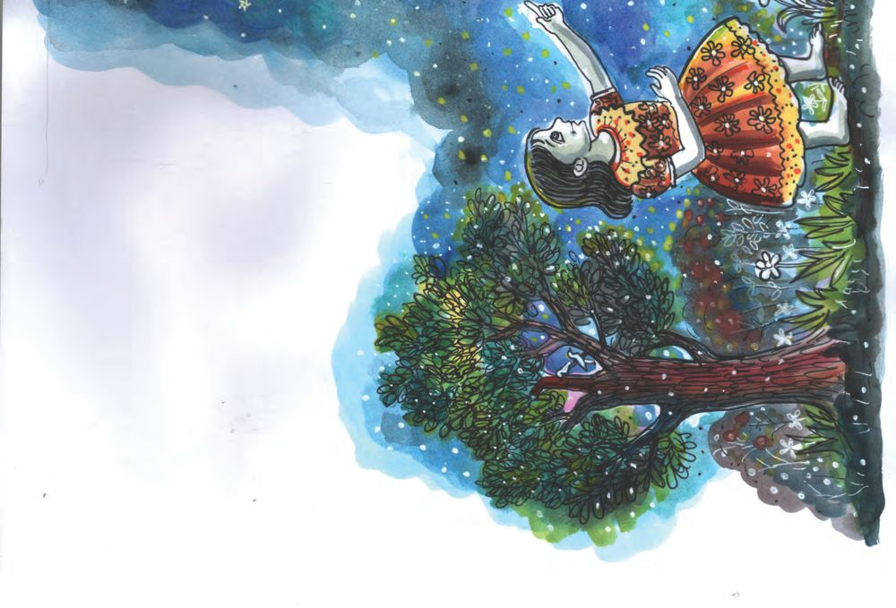
7 തിളങ്ങുന്ന കൂട്ടുകാർ ആകാശം നിറയെ പൂക്കൾ മിന്നിത്തിളങ്ങുന്ന പൂക്കൾ എന്തു ഭംഗി! ഹായ്! നക്ഷത്രങ്ങൾ!
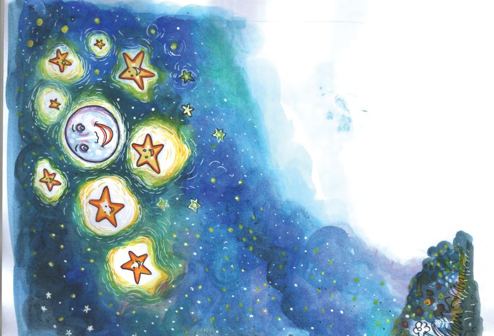
ജാനി നക്ഷത്രങ്ങൾ ജാനി
: ഭൂമിയിൽ വരുന്നനോ? : എന്താ വഴി? : വഴിയുണ്ട്. 57
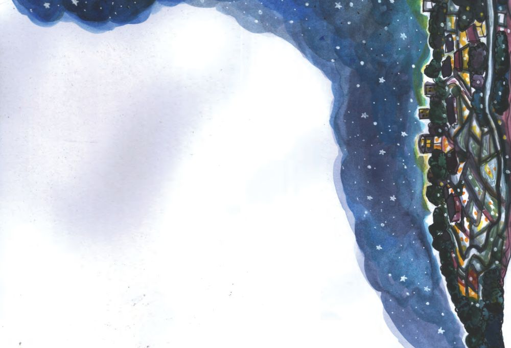
ജാനി :
കുഞ്ഞിക്കിളീ കുഞ്ഞിക്കിളീ ഒരു വഴി പറഞ്ഞുതാ.
കുഞ്ഞിക്കിളി
അതാ ഊഞ്ഞാൽ.
:
58
ഊഞ്ഞാലാടി ജാനി. ഉയർന്നുചെന്നു ജാനി.
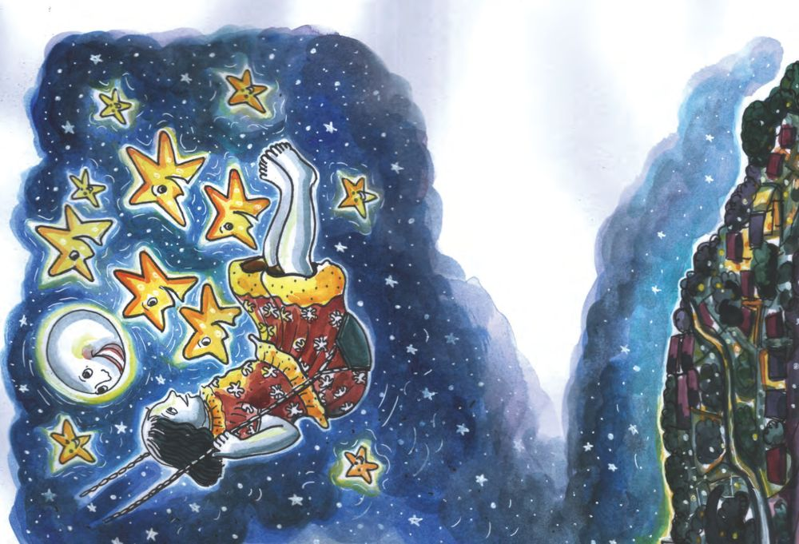
ജാനി : വരൂ, എൻ്റെ മടിയിൽ കയറൂ. വേഗം കയറൂ. കുഞ്ഞുനക്ഷത്രങ്ങൾ ജാനിയുടെ മടിയിൽ കയറി.
59
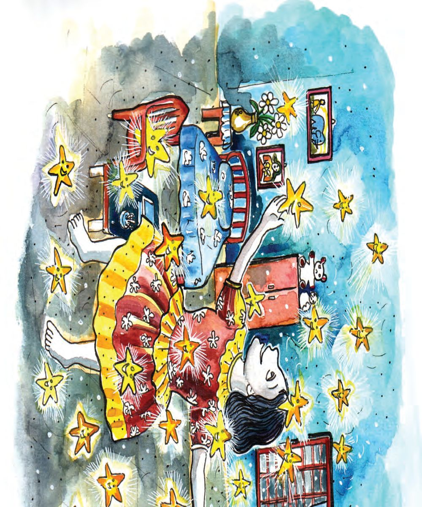
ജാനി : ഹായ് ! എൻ്റെ മുറി നിറയെ നക്ഷത്രങ്ങൾ എന്തു ഭംഗി ! ജാനിയുടെ മുറിയിലാകെ നക്ഷത്രങ്ങൾ പാറിക്കളിക്കുന്ന നക്ഷത്രങ്ങൾ !
60
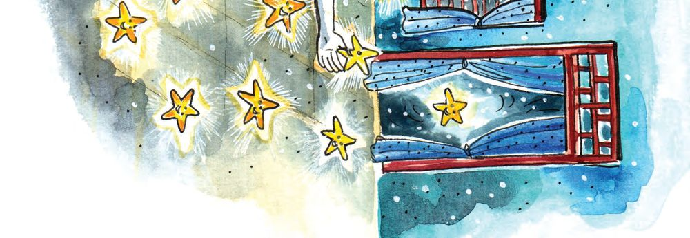
ഉത്തരം പറയാമോോ ? ആനകേറാമല ആടുകേറാമല ആയിരം കാന്താരി പൂത്തിറങ്ങി കിഴക്ക് കാണും കാലത്ത് തലയ്ക്കു മീതെ ഉച്ചയ്ക്ക് കടലിൽ താഴും സന്ധധ്യക്ക് പറയൂ പറയൂ ഞാനാര് ? എനിക്കുണ്ടടൊരു കുപ്പായം നീലക്കുപ്പായം പുള്ളിക്കുപ്പായം വിരിച്ചാലും വിരിച്ചാലും തീരില്ല ഇരുട്ടിൽ ആകാശത്തിൽ വലിയ വിളക്കായ് തെളിയും മുഴുവട്ടത്തിൽ കാണാം മുറിവട്ടത്തിൽ കാണാം പേരെന്താണെന്നറിയാമോോ? പറയുന്നനോർക്കകൊരു സമ്മാനം എൻ്റെ വക ........................................................................... ........................................................................... ........................................................................... ........................................................................... 61
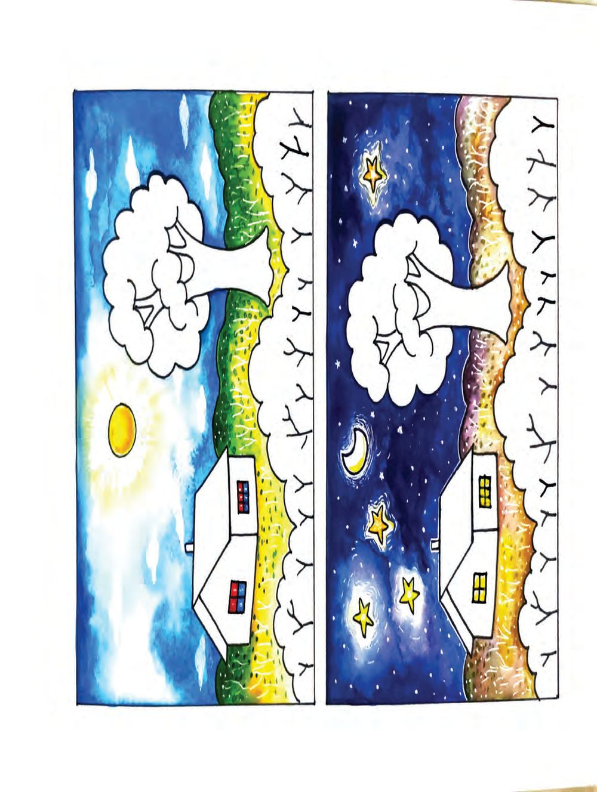
പകലും രാവും നിറം കൊൊടുക്കാം
62
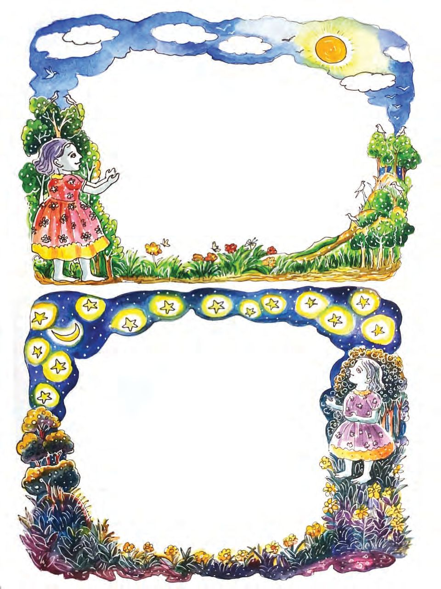
എഴുതാം
പകൽനേരത്തെ ആകാശം ........................................................................... ........................................................................... ........................................................................... ........................................................................... ........................................................................... ...........................................................................
രാത്രിയിലെ ആകാശം ........................................................................... ........................................................................... ........................................................................... ........................................................................... ........................................................................... ...........................................................................
63
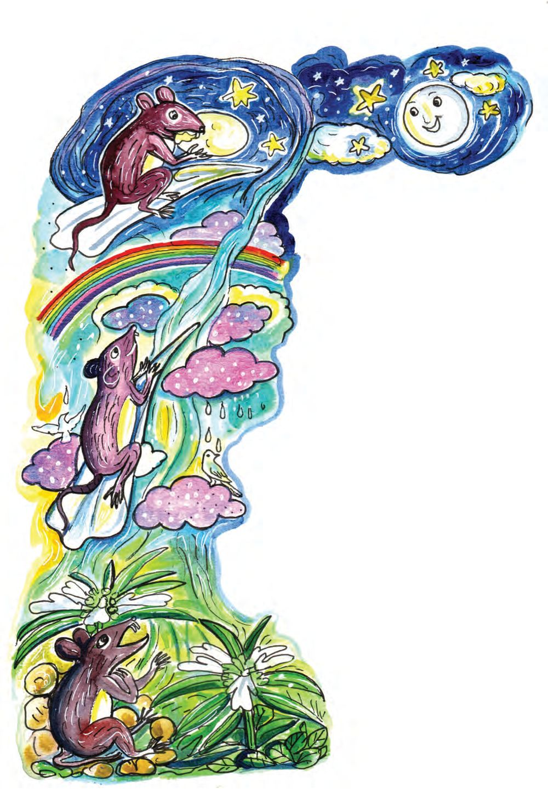

പാട്ടരങ്ങ് അഴകുള്ള പപ്പടം അമ്പിളിപ്പപ്പടം ആരാരെടുക്കും? ആരാരു തിന്നും? കുണ്ടിലിരിക്കും ചുണ്ടെലി ചൊൊല്ലി ഞാൻ തിന്നും കരണ്ടുതിന്നും തുമ്പപ്പൂവിൻ റോോക്കറ്റേറി അമ്പിളി കണ്ടു പറന്നൂ ചുണ്ടെലി. വഴിയിൽ കണ്ടു മഴവില്ല് ഒന്ന്, രണ്ട്, മൂന്ന്, നാല്, അഞ്ച്, ആറ്, ഏഴ് ഏഴഴകുള്ളളൊരു മഴവില്ല്.
64
അമ്പിളിമാമനെ നിരീക്ഷിക്കൂ വരയ്ക്കൂ
മാമാ മാമാ അമ്പിളിമാമാ ഇന്നലെ മാമൻ പപ്പടവട്ടം ഇന്നാരു കടിച്ചു പപ്പടവക്കിൽ?
65
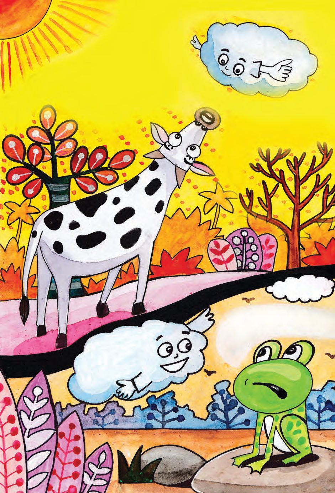
8 പെയ്യട്ടങ്ങനെ പെയ്യട്ടെ
ഓ, പിന്നെ പെയ്യാം
തട്ടാതെ മുട്ടാതെ മഴ പെയ്താട്ടെ
മഴ പെയ്താട്ടെ പേക്രരോം.... പേക്രരോം.... ഓ, പിന്നെ പെയ്യാം